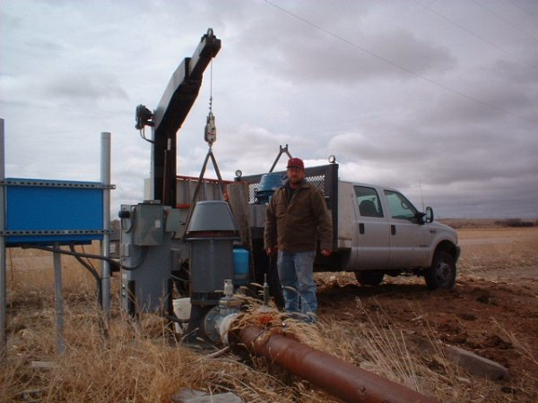
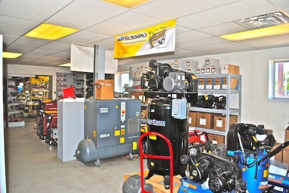
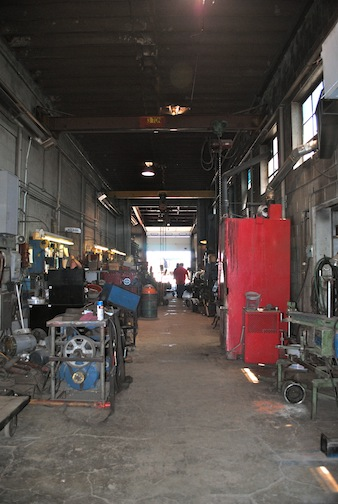
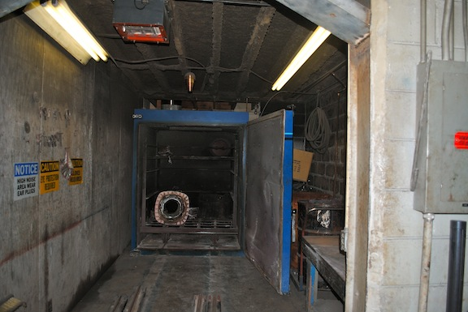
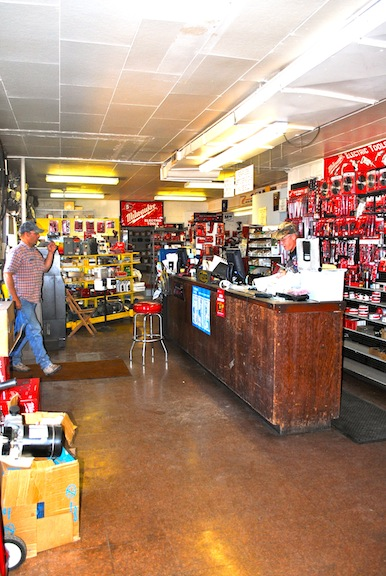

North Platte, Nebraska · 3rd generation
A family shop on East 4th Street for over 75 years: electric motor repair, generators, drives and the parts and tools to keep your equipment running.
Repairs in our East 4th Street shop, and service calls out to wells and farms.





Motor service and repair is where it all started. We also service the drives, generators and machines those motors run.
Single phase 1–50 HP and three phase 1–1,500 HP, with in-house machining.
DC motors from 1 to 1,000 HP.
Including drive application analysis and harmonic power analysis.
Engine driven, PTO, wind and residential, commercial and standby units, plus auto-start for remote cattle wells.
Blowers, fans, gear boxes, hoists and pumps.
Baldor, Fasco and WEG motors, generators, compressors, welders, pumps, grain handling, hoists, controls and Milwaukee tools.
Knapp Electric is a 3rd generation family operated business located in North Platte for over 75 years, known for sales and service in electric motors, generators, Milwaukee tools, pumps, compressors and welders.
We do emergency repair jobs outside of shop hours. Call us or stop by, and we can handle your electric equipment needs.
Stop by the shop on the east side of town, or call for pricing and service. After hours, use the emergency line.